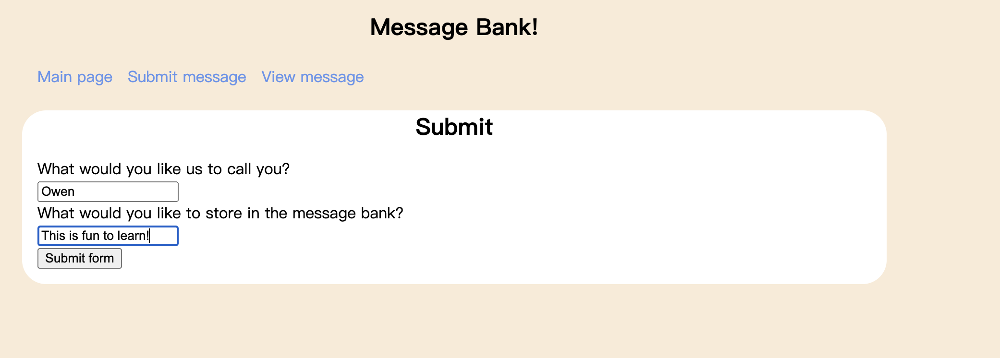
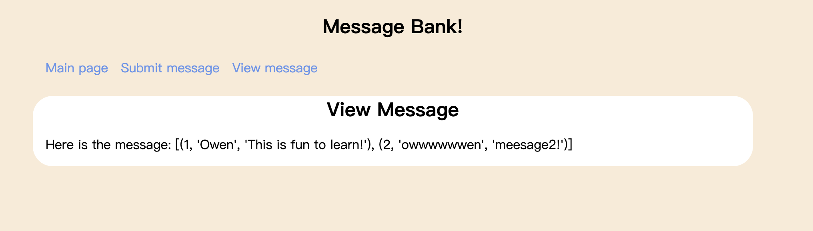

def get_message_db():
# return the message database, and if its first time, then create a table and return it
try:
return g.message_db
except:
g.message_db = sqlite3.connect("messages_db.sqlite")
cmd = """
CREATE TABLE
IF NOT EXISTS message(
id INTEGER PRIMARY KEY AUTOINCREMENT,
name text,
message text)
""" # replace this with your SQL query
cursor = g.message_db.cursor()
cursor.execute(cmd)
return g.message_dburl:https://owen020215.github.io/newhw/posts/hw3/
Introduction
In this blog, I will be explaining how to build an interesting website that allows us to submit messages and view them.
My approach is to build 3 separate pages for the website: the Main page, Submit, and View. The first page is a simple overview page, where users can be redirected to the Submit and View pages.
Here is my GitHub Repo for the project: https://github.com/owen020215/Flask-Website-main/tree/main
Main Page

This is a simple html page. Using the demo given from Harlin, we can add new colors and fonts to the page. The page was built on top of the base html, which we added the banners at the top of the page.
Here is the html code to creating the base:
<!doctype html> <link rel=“stylesheet” href=“{{ url_for(‘static’, filename=‘style.css’) }}”> <title>{% block title %}{% endblock %} - PIC16B Website</title> <nav> <h1>Message Bank!</h1> <ul> <li><a href=“{{ url_for(‘main’) }}”>Main page</a></li> <li><a href=“{{ url_for(‘ask’) }}”>Submit message</a></li> <li><a href=“{{ url_for(‘view’) }}”>View message</a></li> </ul> </nav> <section class=“content”> <header> {% block header %}{% endblock %} </header> {% block content %}{% endblock %} </section>
Here is the html code to creating the main page:
Explain{% extends 'base.html' %}
{% block header %}
<h1>{% block title %}Overview{% endblock %}</h1>
{% endblock %}
{% block content %}
<p>Welcome to the message bank!</p>
<p>Please click this link to submit a message: <a href="{{ url_for('ask') }}">Submission Link</a> </p>
<p>Please click this link to view a message: <a href="{{ url_for('view') }}">View Link</a> </p>
{% endblock %}The hyperlinks in the main page makes navigating the entire website very easy.
Submit Page
Here is a screencap to my submit page:

The page allows you to input message and name into it
After pressing submit the message will then be stored into the internal database. There would also be a message thanking the user for submitting the message.
The submit page has the follow html:
{% extends ‘base.html’ %}
{% block header %} <h1>{% block title %}Submit{% endblock %}</h1> {% endblock %}
{% block content %} <form method=“post”> <label for=“name”>What would you like us to call you?</label> <br> <input type=“text” name=“name” id=“name”> <br> <label for=“message”>What would you like to store in the message bank?</label> <br> <input type=“text” name=“message” id=“message”> <br> <input type=“submit” value=“Submit form”> </form> {% if name %} <br> <b>Hello {{name}}! Your message of “{{message}}” has been received.</b> <b>Thank you so much for your submission!</b> {% endif %} {% endblock %}
Internal database
As for the internal database, we can break it down into 3 functions:
get_message_db(). This function handle creating the database of messages. This would check whether there is a database called message_db in the g attribute of the app. If not, then connect to that database, ensuring that the connection is an attribute of g. To do this last step, write a line like do g.message_db = sqlite3.connect(“messages_db.sqlite”)
2.Insert_message(request). This function should handle inserting a user message into the database of messages. This function extract the message and the handle from request.
We create this function be inserting the message into the database using SQL command lines, and then committing it.
def insert_message(request):
conn = get_message_db()
name = request.form.get("name", '')
message = request.form.get("message", '')
cmd = """
INSERT INTO message (name, message) VALUES (?, ?)
"""
cursor = conn.cursor()
cursor.execute(cmd, (name, message))
conn.commit()
cursor.close()random_messages(n) which will return a collection of n random messages from the message_db, or fewer if necessary. We do this using a SQL command line, and then using a for loop to store the outputs into a list. We will then output this list on the view page.
def random_messages(n=2): # this is where we output out=[] # sql command, n can be changed according to input cmd=f"SELECT * FROM message ORDER BY RANDOM() LIMIT {n}" for i in range(n): conn=get_message_db() cursor=conn.cursor() cursor.execute(cmd) fetch=cursor.fetchone() out.append(fetch) cursor.close() conn.close() return out
View page
Using the internal database, the view page would be able to output randomly selected messages from the users.
Here is the screenshot to my view page:

The view page is a page that will show the messages to the user. For mypage, the page has the follow html:
{% extends ‘base.html’ %}
{% block header %} <h1>{% block title %}View Message{% endblock %}</h1> {% endblock %}
{% block content %} Here is the message: {{msgs}} {% endblock %}
Code Chunk
Here is my code for the app.py file:
from flask import Flask, g, render_template, request
import sklearn as sk
import matplotlib.pyplot as plt
import numpy as np
import pickle
import os
import pandas as pd
import sqlite3
from matplotlib.backends.backend_agg import FigureCanvasAgg as FigureCanvas
from matplotlib.figure import Figure
import io
import base64
app = Flask(__name__)
@app.route('/')
def main():
return render_template('main_better.html')
@app.route('/ask/', methods=['POST', 'GET'])
def ask():
if request.method == 'GET':
return render_template('ask.html')
else:
try:
insert_message(request)
return render_template('ask.html', name=request.form['name'], message=request.form['message'])
except:
return render_template('ask.html')
@app.route('/view/',methods=["GET"])
def view():
msgs=random_messages(2)
return render_template('hello.html',msgs=msgs)
def get_message_db():
# return the message database, and if its first time, then create a table and return it
try:
return g.message_db
except:
g.message_db = sqlite3.connect("messages_db.sqlite")
cmd = """
CREATE TABLE
IF NOT EXISTS message(
id INTEGER PRIMARY KEY AUTOINCREMENT,
name text,
message text)
""" # replace this with your SQL query
cursor = g.message_db.cursor()
cursor.execute(cmd)
return g.message_db
def insert_message(request):
conn = get_message_db()
name = request.form.get("name", '')
message = request.form.get("message", '')
cmd = """
INSERT INTO message (name, message) VALUES (?, ?)
"""
cursor = conn.cursor()
cursor.execute(cmd, (name, message))
conn.commit()
cursor.close()
def random_messages(n=4):
# this is where we output
out=[]
# sql command, n can be changed according to input
cmd=f"SELECT * FROM message ORDER BY RANDOM() LIMIT {n}"
for i in range(n):
conn=get_message_db()
cursor=conn.cursor()
cursor.execute(cmd)
fetch=cursor.fetchone()
out.append(fetch)
cursor.close()
conn.close()
return out
#if __name__ == "__main__":
#app.run(debug=True, host="0.0.0.0", port=int(os.environ.get("PORT", 8080)))
#get_message_db()Here is the css code used for the style:
html {
font-family: sans-serif;
background: AntiqueWhite;
padding: 1rem;
}
body {
max-width: 900px;
margin: 0 auto;
}
h1 {
color: rgb(0, 0, 0);
font-family: sans-serif;
margin: 1rem 0;
text-align: center;
}
a {
color: CornflowerBlue;
text-decoration: none;
}
hr {
border: none;
border-top: 1px solid lightgray;
}
nav {
background: AntiqueWhite;
padding: 0 0.5rem;
border-radius: 25px;
}
nav ul {
display: flex;
list-style: none;
margin: 0;
padding: 0;
}
nav ul li a {
display: block;
padding: 0.5rem;
}
.content {
padding: 0 1rem 1rem;
background: white;
border-radius: 25px;
}
.flash {
text-align: center;
margin: 1em 0;
padding: 1em;
background: #cae6f6;
border: 1px solid #377ba8;
}